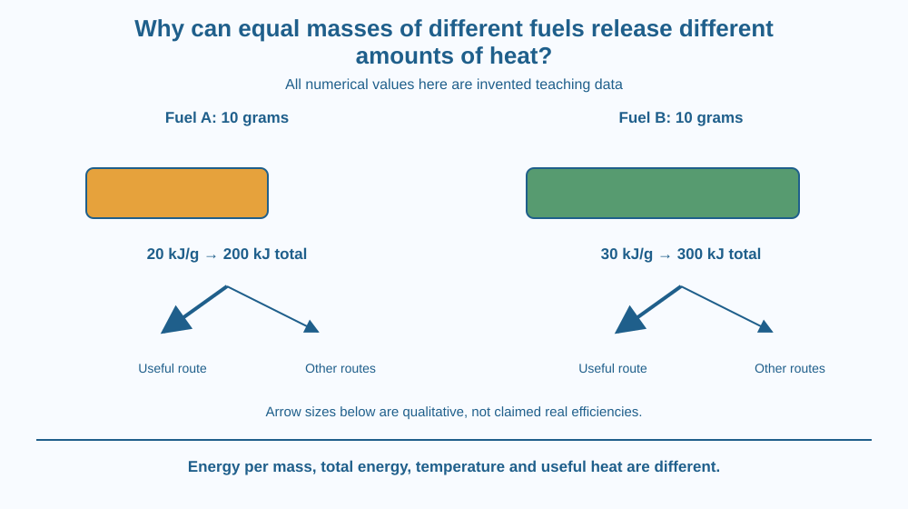

Explain why equal fuel masses can release different energy amounts during complete combustion. Define calorific value and distinguish it from flame temperature and the useful heat reaching a task. Use clearly invented numbers for a fair comparison without performing any burning experiment.
Two fuels have equal masses. Under specified complete-burning conditions, one releases more energy than the other. The difference cannot be explained simply by weighing the samples again: mass alone does not specify the chemical composition or the energy change of the reaction.
Now imagine the higher-energy fuel used in a badly designed device. It may deliver less useful heat to a pot than another fuel in a better system. Fuel energy and practical cooking performance are related but distinct questions.
Understanding both prevents one impressive number from being treated as a complete verdict.
Calorific value is the energy released per unit mass of a fuel during complete combustion under defined conditions. It is commonly expressed in units such as kilojoules per kilogram. Units and the measurement basis are part of the value's meaning.
Different fuels contain different substances and proportions. Their reactants and products have different energy relationships, so equal masses need not produce equal heat release. The explanation concerns chemical composition and reaction energy, not a hidden stock of flames inside each sample.
Consider invented fuels A and B with model values of 20 and 30 kilojoules per gram. Ten grams would release 200 and 300 kilojoules respectively under the stated model. These values are arithmetic examples, not real measurements of named commercial fuels.
The total model energy is calorific value multiplied by fuel mass. A larger mass of a lower-value fuel can release more total energy than a smaller mass of a higher-value one. A fair comparison must therefore state whether masses are equal.
Useful heat is the portion transferred to the intended task. Some energy warms the surrounding air, device and exhaust instead. Device design and operating conditions affect the fraction reaching the target.
Flame temperature is another quantity. It depends on fuel, oxidiser, mixing, losses and conditions. A hotter-looking flame does not directly measure total energy per kilogram. Nor does a bright flame automatically have a higher calorific value than a faint one.
Moisture and the reporting basis matter. Energy used to warm or vaporise water can change the useful output of a wet fuel. Technical reports can also distinguish heating values according to how water in the products is treated. Values must be compared on a consistent basis.
Fuel choice includes more than energy content: availability, safe equipment, emissions, cost and the task all matter. This lesson explains the energy-per-mass idea without recommending a current product, changing a stove or inventing pollutant statistics.
Draw two equal-sized mass boxes labelled A and B. Give each a different number of energy tokens according to an explicitly invented calorific-value model. This distinguishes equal mass from equal energy.
Next split each energy output into useful and other routes. The number reaching the target depends on the system, not only the fuel label. A high initial output can still be poorly directed.
Finally place a temperature symbol beside the flame rather than using it as the same token count. Temperature describes a condition, while energy per mass describes a quantity released. The model is stronger when those units remain separate.
The SVG compares equal 10-gram samples of invented fuels A and B using the stated example values. Separate energy bars show 200 and 300 kilojoules under the model assumptions.
A second panel divides released energy into useful transfer and other routes. It labels these qualitatively rather than assigning an unsupported real efficiency. No flame colour is used as a numerical thermometer.
The diagram contains a prominent invented-data note. It is an energy-accounting illustration, not a claim about actual wood, gas or liquid-fuel performance and not a design for building a burner.

Cooking and heating discussions in India often compare fuels. A meaningful comparison needs a common unit and a clearly defined purpose. Price per kilogram, energy per kilogram and useful cooking output are three different measures.
A change of device can affect the useful output from the same fuel. This explains why a fuel's calorific value is informative but insufficient for predicting exactly how fast an arbitrary pot of food will cook.
Handling and burning fuels belong to responsible adults using appropriate equipment. Students do not need a flame, match, hot container or fuel sample to understand a per-mass energy calculation.
Use paper, a pencil and a calculator if desired. No fuel or heating is needed.
Label every number invented. The exercise measures arithmetic understanding rather than real fuel performance. Do not convert a model result into cooking advice, cost advice or an emission claim about a named fuel.
A fuel has a high calorific value, but much of its released energy leaves in hot exhaust. Why might it provide less useful heating than expected?
Now compare a value reported per kilogram of dry material with one reported per kilogram of wet material. Explain why an unqualified numerical comparison could be misleading even if both reports were measured carefully. The basis belongs beside the number.
What does calorific value compare?
Answer: A — Calorific value expresses combustion energy relative to fuel mass under defined conditions.
Why can useful heat differ from total released energy?
Answer: C — The surroundings, device and exhaust can receive energy instead of the intended target.
Invented fuel A releases 20 kJ per gram. What model energy comes from 10 grams?
Answer: B — Multiplying 20 kJ per gram by 10 grams gives 200 kJ.
Write a comparison card with separate spaces for fuel mass, calorific value, model total energy and useful-output limitations. Use only the invented A and B data.
Add a correction to the statement that the brightest flame must provide the most energy per kilogram. Your card should explain why a real fuel decision requires further information while avoiding an unsupported recommendation or a home combustion test.
A larger energy release is not the same as a larger useful result. The pathway between source and task matters. Following that pathway connects a fuel property to engineering design without confusing either one with the other or treating flame appearance as a complete measurement.
Calorific value compares released energy per fuel mass under stated conditions; total energy, flame temperature and useful delivered heat remain different quantities.